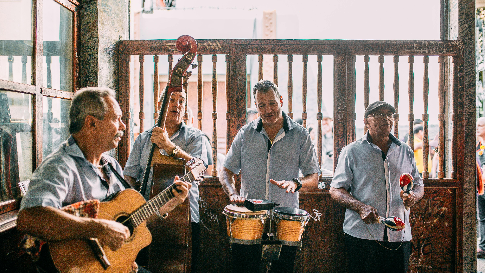

Eventos
Festival de Música Brasileira agita São Paulo em outubro
O maior festival de música nacional do país promete atrair mais de 100 mil pessoas para a capital paulista com grandes nomes da MPB.
20 de setembro, 2025 • Ricardo Santos
Ler Matéria Completa
Notícias Recentes

Música
Nova banda de rock nacional estreia na Rádio KAKAROTO
Formação jovem de Belo Horizonte traz um som inovador que mistura rock alternativo com elementos da música brasileira.
18 de setembro, 2025 • Ana Silva

Música
Arquivo Sonoro: resgatando clássicos da música brasileira
A Rádio KAKAROTO lança programa especial com gravações históricas e histórias por trás de grandes sucessos.
15 de setembro, 2025 • Ana Silva

Música
Microfone no Parque: rádios locais ganham espaço ao ar livre
Uma iniciativa inédita leva programas ao vivo direto para praças e parques, aproximando ouvintes e artistas de forma interativa
5 de setembro, 2025 • Ricardo Santos
Receba Nossas Notícias
Cadastre-se para receber as principais notícias do mundo musical e da Rádio KAKAROTO diretamente no seu email.
Cadastrar Email